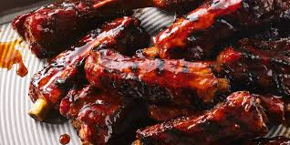

Back to Home
Ribs

Description
BBQ ribs are a smoky, tender masterpiece, each rack glazed with a caramelized, tangy-sweet sauce that has just the right balance of heat and sweetness.
The meat is fall-off-the-bone tender, yet holds its shape with a perfect bite. As you take a bite, the smoky flavor dances on your taste buds, while the sauce gives a glossy, sticky coating that adds a rich, mouthwatering depth. The ribs are charred to perfection on the edges, offering a slight crispy texture that contrasts beautifully with the juicy, succulent meat. Each bite is a satisfying explosion of flavor, a perfect combination of savory, smoky, and sweet.
Ingredients
- 4 pounds pork spareribs
- 1 cup brown sugar
- ½ cup chile sauce
- ¼ cup ketchup
- ¼ cup soy sauce
- ¼ cup Worcestershire sauce
- ¼ cup rum
- 2 cloves garlic, crushed
- 1 teaspoon dry mustard
- 1 dash ground black pepper
- cooking spray
Directions
- Preheat the oven to 350 degrees F (175 degrees C).
- Cut spareribs into serving size portions; wrap in double thickness of foil.
- Bake in the preheated oven for 1 ½ hours. Unwrap and drain drippings. (I usually freeze drippings to use later in soups.) Place ribs in a large roasting pan.
- Mix brown sugar, chile sauce, ketchup, soy sauce, Worcestershire sauce, rum, garlic, mustard, and pepper together in a bowl. Coat ribs with sauce and marinate at room temperature for 1 hour or refrigerate for 8 hours to overnight.
- Preheat the grill to medium heat. Position the grate 4 inches above heat source; grease the grate with cooking spray.
- Cook ribs on the preheated grill for 30 minutes, basting with marinade.